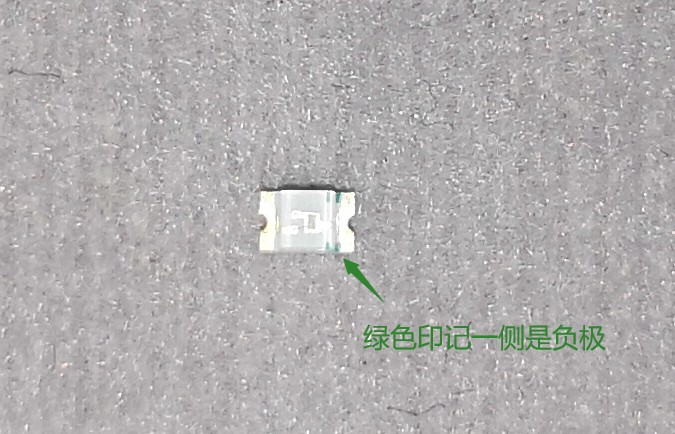
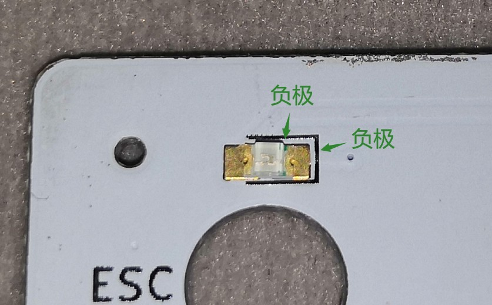
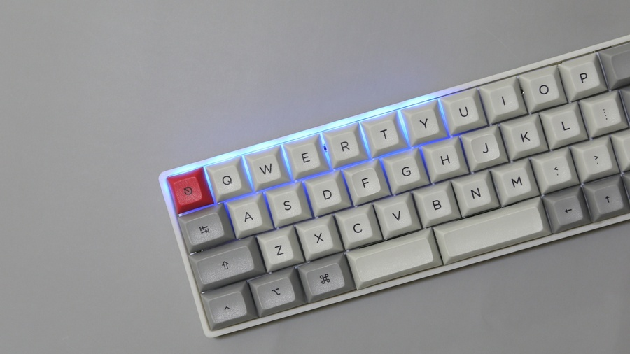
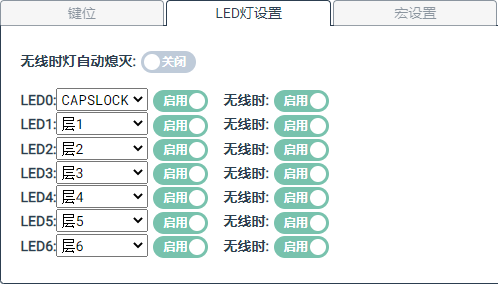
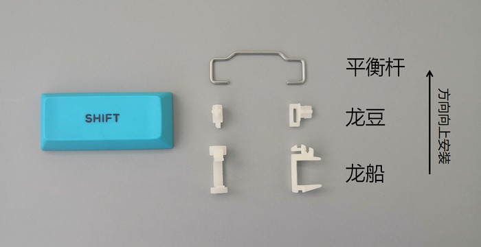
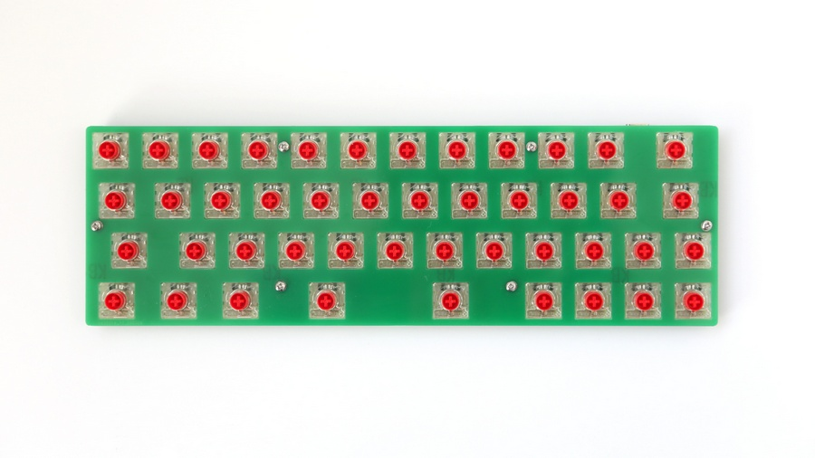
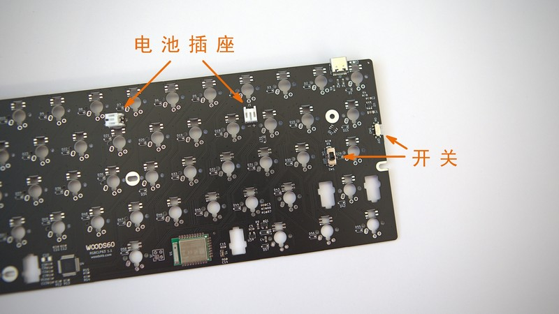
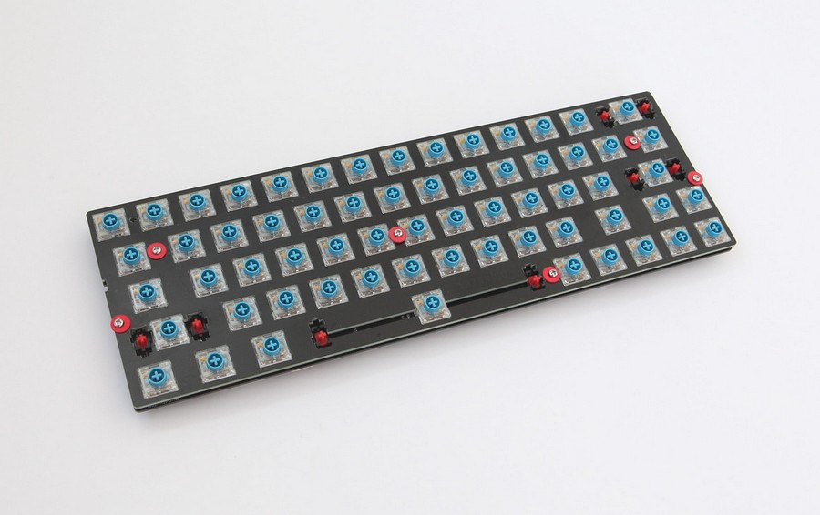
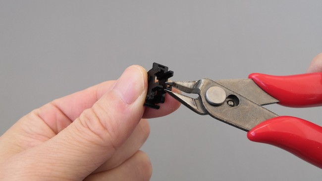

组装
如果您没有选择代组，收到的是套件零件，需要您自行焊接组装。下面分别介绍WOODS40和WOODS60的组装：
1. WOODS40
WOODS40组装的基本步骤是：
- 焊接指示灯
- 安装轴体
- 连接电池并装入外壳
1.1. 焊接指示灯
指示灯为0805规格LED，比较小，需要您仔细安装。LED上有绿色印记的一侧是负极：

电路板上LED焊盘外有“コ”形标记，封口一侧是负极。所以LED在电路板上是这样摆放：

LED共有8颗，充电状态指示灯在右上角，Backspace键上；另外7颗在第一排左边7个键上，编号LED0——LED6。位置如此图所示：

焊好指示灯后，可以利用前述切层键测试一下层指示灯工作是否正常。否则焊好轴后发现指示灯有问题就只能拆轴了。比如短接右空格触点，则LED1会亮起；短接左空格触点超过200ms则LED2会亮起。默认的指示灯配置如下图所示：

1.2. 安装轴体
WOODSKB矮轴系列键盘有一块“定位板”，是夹在轴体和电路板之间的。所以焊轴前将这个定位板铺放在电路板上，然后再插上轴体。
大键稳定用的是常见的龙船、龙豆和平衡杆。所以您调试平衡杆的经验也完全适用于WOODSKB矮轴键盘。

建议先装入两个空格大键、四角上的轴（可以先不焊接），然后试着调试一下空格大键，然后再安装、焊接其他的轴体。试调可以了解键帽和其他部件的匹配程度，方便焊接完成后进行最终调整。
安装大键，并进行试调：
- 龙船卡钢丝的一侧朝上，装入电路板上的卡位中
- 龙豆装入键帽，在龙豆上卡入平衡杆
- 注意摆对键帽的上下方向，将键帽扣在轴芯上，将平衡杆卡入龙船，然后按紧键帽
- 装完试试按下和回弹是否顺畅，此时周围没有装轴体，可以方便的观察卡滞出现在什么位置。
平衡杆的安装可以看B站上这个演示视频：WOODS40矮轴键盘平衡杆安装
您可以从其他渠道了解一下平衡杆的调教和润滑，本文不再赘述。额外需要提示一下的是，如果出现大键卡滞，可以前后拨动龙船在电路板卡位中的位置，甚至可以对电路板卡位进行微小的打磨，一般都可以找到一个比较顺滑的位置。
大键试调完，拆下键帽，并继续将全部轴体装入。如果您选购了“焊接辅助定位板”，在此时使用：
- 拆下龙船，将所有轴体装入电路板
- 在轴体上扣上这个焊接辅助定位板
- 然后用长螺丝和螺母固定

现在把所有轴体焊好。
对于选配碳纤维定位板的请注意，焊接时切勿上锡过多，锡能填平焊孔就足够了。焊锡过多有可能导致短路。
1.3. 连接电池并装入外壳
套件中配有电池和电池胶，电池胶的使用方法可以参考淘宝上某卖家的演示视频。
- 将电池粘在外壳底部。注意位置不会被电路板上的电池座压到。
- 导线插入电路板的电池座中。
- 电路板放入外壳。
- 拧上自攻螺丝。注意螺丝有两种长度规格，最下面一排的螺丝孔位用短的螺丝。
在电路板的上边缘，O、P键之间有一个开关，这个是电池开关。装好键盘外壳后，可以用附送的SIM卡顶针拨动。拨动到右侧是打开。
2. WOODS60
WOODS60可以焊接矮轴和普通的MX轴。使用不同轴体的组装步骤有些差别。这里讲述使用矮轴时的组装步骤。基本步骤是：
- 焊接电池座和开关
- 焊接轴体
- 安装卫星轴
- 完成组装
2.1. 焊接电池座和开关
由于各家外壳的加强筋、电池槽、开关孔等都会有些不一样，所以影响到了电池插座和开关的位置选择。WOODS60上留有2个电池插座位置，可以根据外壳底部的情况选择一个位置。
为了照顾底部封闭的外壳，在PCB左边缘设计有一个开关，跟标准GH60位置的开关，选择一个使用就好了。开关是电池开关，关闭后完全不会消耗电量。

2.2. 焊接轴体
将轴体插到PCB上。为防止轴体松动，可以扣上定位板，然后用螺丝固定。如下图所示（拍照时偷懒了没有拆卫星轴，实际此时不要装卫星轴）：

现在焊接好轴体。然后拆下定位板。
2.3. 安装卫星轴
WOODS60使用标准的钢板卫星轴稳定大键，但使用矮轴时按键有可能无法完全按到底。介意的话可以把干涉的支撑柱剪去1mm左右。如下图所示：

将卫星轴装到PCB上。安装方法可以参考看B站上这个演示视频：WOODS60矮轴键盘卫星轴安装。
2.4. 完成组装
插上电池，装入外壳。有的塑料壳加强筋比较多，可能会跟电池座、卫星轴有一些干涉，需要打磨一下。
3 完成
安上键帽，键盘就组装完成了。连上数据线就可以打字了。但是键位还是默认的出厂配置。下面需要更新键位了。